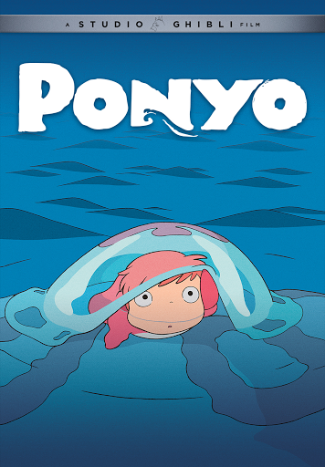

spiritedaway is a 2001 japanese animated fantasy film written and directed by hayao miyazaki ,animated by studio ghibili. Spirited Away tells the story of Chihiro Ogino (Hiiragi) a ten yearold girl who while moving to a new neighbourhood,enters the world of kami(spirits of japanese shinto folklore).After her parents are turned into pigs by the witch yubaba(Natsuki), Chihiro takes a job working yubaba's bathhouse to find a way to free herself and her parents and return to the humanworld.
Details
Ponyo
Ponyo is a 2008 japanese animated fantasy film written and directed by hayao miyazaki ,animated by studio ghibili. Ponyo a goldfish who escapes from the ocean and is helped by a five year old shuman boy,sosuke,after she is washed ashore while trapped in a glass jar. As they bond with each other,Ponyo desires to become a human girl,against the devasting cirumstances brought about by her acquisition and use of magic.
Details
moving castle

Howl's moving castleis a 2004 japanese animated fantasy film written and directed by hayao miyazaki ,animated by studio ghibili. The film is set in a fictional kingdom where both magic and early twentieth-century technology are prevalent,against the backdrop of a with another kingdom.It tells the story of sophie ,a young milliner who is turned elderly woman by a witch who enters her shop and curses her.she encounters a wizard named Howl and gets caught up in his resistance to fighting for the king.
Details
copyright©2023